Contents
- TL;DR：约束撤掉之后，训练要接住什么？
- 1. Introduction：为什么扩大训练数据，原来的草稿却不继续变好？
- 2. Preliminaries：验证为什么能保持目标分布？
- 3. EAGLE-3：自由状态、多层输入与训练中的递归
- 4. Experiments：把加速、接受长度和框架收益分别核对
- 5. Related Work：把 EAGLE-3 放回论文发表时的技术分工
- 6. Conclusion：论文真正证明了什么？
- Appendix A. Implementation Details：复现实验需要哪些具体配置？
- 扩展调研：从 2025 的多步状态，走到 2026 的硬件适配
- 官方代码审计：论文示意图与当前实现分别是什么？
- My Interpretation：优势、隐含代价与下一步实验
- References、来源与下载
PAPER READINGS / INFERENCE · TRAINING · SYSTEMS
EAGLE-3：让草稿模型学会接住自己的输出
大模型每次只生成一个 token，往往在反复搬运同一批权重。EAGLE-3 把“多走几步”交给一个小模型：它不再被要求精确复原大模型的隐藏特征，而是在训练时反复使用自己的状态，学会提出更长、更可靠的候选序列。
TL;DR：约束撤掉之后，训练要接住什么？
一句话。 EAGLE-3 用训练中的多轮自反馈，替代对目标模型特征的回归约束，再融合目标模型的低、中、高层信息，使小草稿模型能够持续提出更容易通过验证的 token。
一段话。 EAGLE / EAGLE-2 的小模型既预测 token，也预测目标模型的高层隐藏特征。这个辅助任务让后续草稿步骤有状态可用，却限制了状态表达。直接撤掉特征回归会使第一步变好、后续步骤变差：训练时看到真实特征，推理时看到自己的输出，两者分布不同。EAGLE-3 把这种自反馈放进训练，让状态只为多步 token 预测服务，并通过多层特征融合提供更丰富的起点。大模型仍验证草稿，正确的推测采样保留目标分布。原文最高 6.47× 是特定模型、数据集、greedy 条件下相对普通自回归的结果；H100 + SGLang 的 batch=1 吞吐是 373.25 tokens/s，相对同框架普通解码约 2.36×。
五个关键点。
- 改变训练目标。 自由状态不必模仿教师某一层，却必须对后面的 token 有用。
- 改变训练输入。 让后续轮次真正吃到草稿自己的状态，减少自反馈造成的漂移。
- 改变初始化信息。 低、中、高层特征拼接投影，取代只看顶层。
- 复用验证机制。 EAGLE-2 的动态候选树继续使用；EAGLE-3 主要增强 drafter。
- 分开质量和成本。 接受率、每轮推进长度、wall time、batch 吞吐是不同指标。
1. Introduction：为什么扩大训练数据，原来的草稿却不继续变好？
问题、已有方法与作者的观察
LLM 解码要依赖前面已经生成的 token。普通自回归每推进一格，就执行一次完整目标模型；小 batch 时，权重搬运常比乘加吞吐更关键。推测解码先由较便宜的模型提出一组候选，再由目标模型一次并行评估。它并没有让因果关系消失：它用廉价猜测跨越依赖，再用目标计算校正。
EAGLE 路线利用目标模型已有的隐藏信息，把 drafter 缩成一个轻量 decoder。EAGLE-2 根据候选置信度组织动态树，减少把验证预算花在不可靠分支上的浪费。作者发现，继续扩大 EAGLE-2 的训练数据，提速逐渐饱和；EAGLE-3 的设计则在本文测试的数据范围内继续改善。

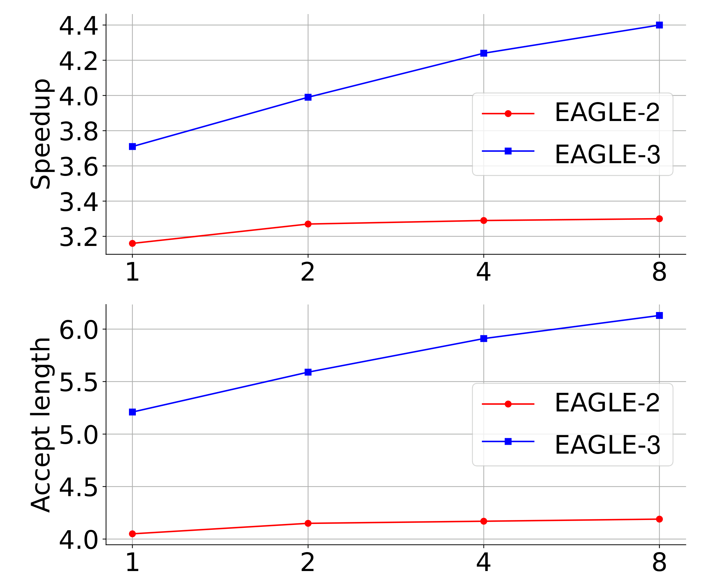
Figure 1: Scaling law evaluated on the MT-bench using LLaMA-Instruct 3.1 8B as the target model, with the x-axis representing the data scale relative to ShareGPT. The new architectural designs in EAGLE-3 enable an increasing scaling curve, which was never observed in the previous works.
Click to zoom · Full PDF
Figure 1 怎么读？ 两个子图的横轴都是相对 ShareGPT 的数据规模，目标模型为 LLaMA-Instruct 3.1 8B，评测为 MT-bench；纵轴分别读提速与接受长度。先比较同一数据量的不同方法，再沿每条曲线观察扩大数据的变化。EAGLE-3 的上升趋势是作者“可以通过数据扩展推理加速”的主要证据。
图支持到哪里？ 它支持有限规模区间内的可扩展性，未给出拟合指数、置信区间或固定训练 FLOPs 的比较。8× 是训练数据条目规模的近似标签，不能直接解释成 8× 的 token 数或 8× 的训练算力。把它称为 scaling curve 比把它当成已证明的普适幂律更准确。

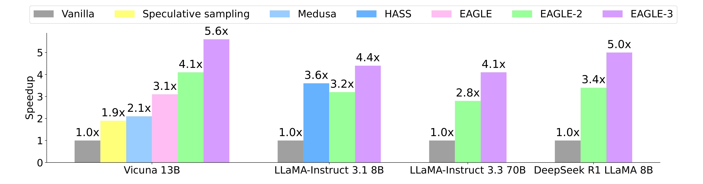
Figure 2: Speedup ratios of different methods at temperature=0. For the standard speculative sampling, Vicuna-13B uses Vicuna-68M as the draft model. In Table 1 , we present comparisons with additional methods, but this figure only showcases a subset. Chat model’s evaluation dataset is MT-bench, and the reasoning model’s evaluation dataset is GSM8K. DeepSeek R1 LLaMA 8B refers to DeepSeek-R1-Distill-LLaMA 8B.
Click to zoom · Full PDF
Figure 2 的角色。 这张图先展示不同目标模型上 temperature=0 的方法级提速。聊天模型看 MT-bench，推理模型看 GSM8K；标准 speculative sampling 的 Vicuna-13B drafter 是 Vicuna-68M。柱子是整条推理路径的速度比，不能读成 drafter 本身的算力提升。该图只画部分 baseline，完整比较要回到 Table 1。
Figure 3：特征回归解决一个问题，也引入一个约束
![Figure 3: Illustration of training-time test (the bottom part) and its comparison with other draft methods (the upper and middle parts). f denotes the feature, t denotes the token, and a represents the unconstrained vectors. We use the hat to denote the predictions from models. All the methods shown in the figure use the token sequence from the previous time step, but for simplicity, this is not depicted in the figure. The input to EAGLE-3 is not actually f , but it is not shown in this figure. We will provide a detailed explanation in the following section.](assets/original/fig-03.png)
Figure 3: Illustration of training-time test (the bottom part) and its comparison with other draft methods (the upper and middle parts). f denotes the feature, t denotes the token, and a represents the unconstrained vectors. We use the hat to denote the predictions from models. All the methods shown in the figure use the token sequence from the previous time step, but for simplicity, this is not depicted in the figure. The input to EAGLE-3 is not actually f , but it is not shown in this figure. We will provide a detailed explanation in the following section.
Click to zoom · Full PDF
从上到下读三条训练路径：传统特征预测、撤去特征约束、EAGLE-3 的 training-time test。图中 是教师特征， 是 token， 是自由状态，帽子表示预测。所有方法还使用上一时间步的 token 输入，图为简洁省略了这条路径；底部画成 的入口，实际将在 §3 换为融合特征。
第一条路径。 拟合教师特征让 接近下一步真实 ，因而递归使用 有一定合理性。代价是小模型既要完成 token 任务，又要逼近大模型的内部表示；很多不同状态都能预测同一个 token，回归却强迫它选中教师的那一个。
第二条路径。 撤去回归后，状态 只需要服务 token loss。在教师特征输入下，第一步可以改善；但后续输入已换成 ，模型未在这种输入上充分训练，于是误差累积。形状相同的两个向量，不意味着语义和分布相同。
第三条路径。 把 送回 drafter，在这些后续状态上继续算 token loss。最关键的箭头不是额外接一个预测头，而是从上一轮输出通向下一轮输入。状态可以自成体系，训练同时要求它支持未来的递归预测。
我的理解是：EAGLE-3 将“逼近教师表示”换成“维持一个可持续预测的内部状态”。 这与学习可用的状态转移更接近，而不是把大模型每个隐层细节压缩一份。

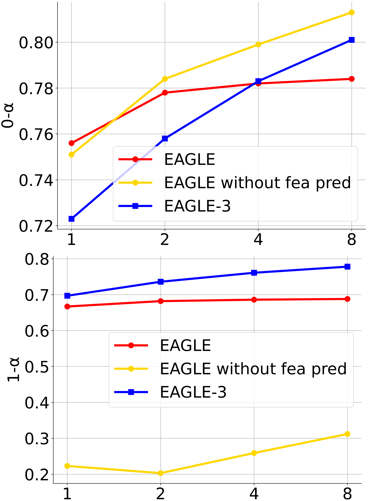
Figure 4: Comparison of acceptance rates across different methods, with the x-axis representing the data scale relative to ShareGPT.
Click to zoom · Full PDF
Figure 4 要同时看两步。 两幅子图对照第一步与第二步的接受率随数据规模的变化。撤去 feature constraint 的方法第一步改善，第二步却恶化；完整 EAGLE-3 对后续步更稳定。还有一个容易被口号掩盖的细节：在 1× 数据处，EAGLE-3 的第一步接受率并不优于所有旧方法。收益来自训练规模和多步行为的结合，不能概括为“每个草稿位置都更好”。
2. Preliminaries：验证为什么能保持目标分布？
2.1 Speculative Sampling：接受、纠正和 bonus token
设词表大小 。给定同一个已提交前缀，目标模型输出 ，草稿模型输出 。两者都是归一化概率；草稿从 中采样候选 。原文保留的接受式为：
Copy LaTeX
\min\left(1,\frac{p(x)}{q(x)}\right)当 时必接受；否则用均匀随机数与比值比较。拒绝时，从原文的残差分布采样：
Copy LaTeX
p'(x)=\frac{\max(0,p(x)-q(x))}{\sum_{v=1}^{V}\max(0,p(v)-q(v))}这里 ，分母对词表所有 求和。形状仍为 。注意对当前 token 的接受不等于整条链的接受：从第一个拒绝点起，后面的候选均建立在错误前缀上，应丢弃。所有候选通过时，再采样一个目标 bonus token；拒绝时则产生一个纠正 token。批量 target forward 的主要收益，就是一次目标计算换来多个最终提交位置。
一个可算清的 toy example。 令词表为 A/B/C，，。A 接受率为 5/6，B 为 1，C 为 2/3。直接接受的概率质量是 ，剩余 0.2 全部分配给 B；最终得到 。拒绝不是把错误草稿“硬改成 argmax”，而是补齐目标分布中尚未被接受路径覆盖的概率质量。
为什么无损？ 任一 token 的接受质量为 ，拒绝质量补回 ，两者相加为 。这是一格条件分布的等价性，逐格应用才得到序列分布等价。浮点实现、随机数消耗顺序、量化 logits、top-p 配置都必须与验证算法的假设匹配。分布相同不要求相同 seed 下逐 token、逐 bit 一模一样。
# Reconstruction: simple chain, not the full EAGLE tree sampler
draft = sample_chain(q, prefix, depth)
p = target_forward(prefix, draft) # evaluate proposed positions in parallel
for i, x in enumerate(draft):
if uniform() <= min(1, p[i][x] / q[i][x]):
commit(x)
else:
commit(sample(normalize(positive_part(p[i] - q[i]))))
discard_suffix(i + 1)
break
else:
commit(sample(p[depth])) # bonus token
对 greedy 解码，接受条件通常退化为与目标选择一致；对随机采样，必须保留候选概率和正确残差。任意树都不能直接套用一条链的 ：树的生成、选择与验证必须共同构成有效的条件采样器。
2.2 EAGLE 和 EAGLE-2：小 decoder 与动态候选树
EAGLE 把大模型顶部特征与向前移动一格的 token embedding 一起输入小 decoder。提前提供“真正选了哪个 token”，可以消除只看隐藏状态时下一 token 采样的不确定性。它预测下一位置的特征，再通过 LM head 得到 token 候选。
EAGLE-2 没有把小模型变成另一台完整 LLM，而是按候选置信度动态分配树节点。高置信度区域可以走深，分布不确定时可以展开兄弟分支。验证中一个节点只能看已提交前缀、自身和祖先，不能看同层兄弟或别的路径；树 attention mask 将多个候选路径放进一次 forward，保持每条路径的因果语义。
树节点数是验证计算预算，树深度是最多串行提出几步，最终接受长度是一次循环真正推进几格。三个量必须分开。更宽的树可能增加命中路径的机会，也会增加 target 的 token 计算和临时 KV。
3. EAGLE-3：自由状态、多层输入与训练中的递归
3.1 Inference Pipeline：先对齐 token，再对齐特征

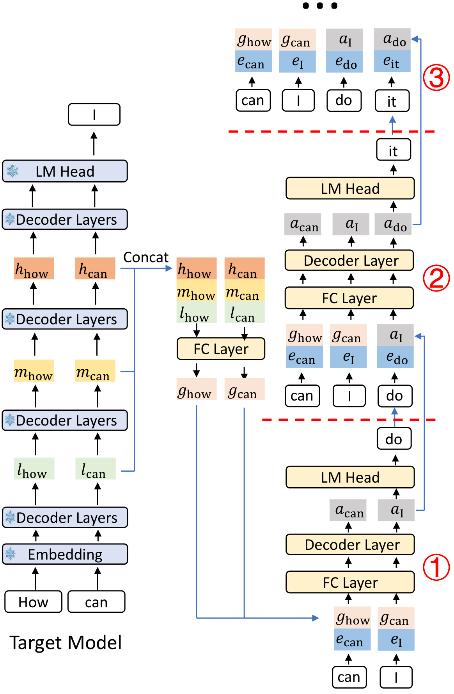
Figure 5: Diagram of the EAGLE-3 inference pipeline, illustrating the three steps of the draft model. l , m , and h represent the low, middle, and high-level features of the target model, respectively. e denotes the embedding.
Click to zoom · Full PDF
Figure 5 从 “How can” 开始。 已提交前缀经过 target prefill 后，target 的 logits 产生根 token “I”。此刻有 “can” 位置的低、中、高层特征，却没有把 “I” 作为输入再跑过 target，所以尚无对应的教师特征 。
第一步将 与已选 token 的 embedding 配对，生成自由状态 ，再预测 “do”。第二步用 与 继续预测 “it”。第三步依此递归。状态属于当前输入位置，logits 用来预测下一位置；embedding 向前一格是数据流的关键。
原文说 “I has not been checked”，这里指尚未把它送入 target 获得特征；“I” 本身来自目标采样，根 token 并非不可信草稿。另外，§3.1 第二步描述里写 input to “Step 1”，按图和递归关系应为第二步，属于索引笔误。
融合与递归的 tensor shape
以下为本篇依据论文重构的表达式，不是原文编号公式。 为 batch， 为位置数， 为 target hidden width。三组教师特征 均为 ：
Copy LaTeX
g=W_f[l;m;h],\qquad [B,S,3k]\rightarrow[B,S,k]若按 PyTorch 的行向量约定，实现写成 Linear(3*k, k)，其权重存为 。单位置融合约需 MAC；它增加了输入信息，不需要把目标模型全部层长期缓存。
Copy LaTeX
a_{t+1}=D_\theta(s_t,e_{t+1},\mathrm{KV}_{\mathrm{draft}}),\quad q_{t+2}=\operatorname{softmax}(W_{\mathrm{head}}a_{t+1})首步 ，后续 。 的形状都是 ， 为 ；draft 内部实际需要 attention、位置编码、KV 与因果 mask，表达式省略这些细节。论文图把 embedding 与 state 的 拼接经过 FC 压回 ，再进入 decoder；后面的代码审计会说明当前仓库为何不同。

自制简化图的读法。 蓝色路径只提出候选；target verification 才决定提交哪些 token、保留哪些 KV。验证完成后的真实教师特征为下一轮重新锚定状态，避免一直无限滚动草稿的估计状态。
为何中间层值得保留，但不能过度解释？
作者以顶层与输出头的关系解释：高层特征强烈受下一 token 任务约束，中间层可能保留对未来预测有帮助的信息。融合允许 drafter 学习不同层的组合。
这里有个数学边界。若输出矩阵满列秩，隐藏向量到完整 logits 的线性映射是单射；这不能证明顶层“只包含下一 token 信息”，也不能使 logits 到 softmax 成为单射（统一加常数不改变分布）。所以，多层特征更丰富应看成实验支持的设计动机，不能当作信息论定理。
3.2 Draft Model Training：把推理时会遇到的状态放进训练
训练前冻结 target，用目标模型重新生成数据回答，并提取教师特征和预测分布。旧方法的目标可概括为“feature regression + token loss”；EAGLE-3 去掉 feature regression，在多轮自反馈位置上优化 token 预测。
第一轮以真实融合特征为起点；后面的轮次把 drafter 自己产生的自由状态作为输入。每个轮次都要预测对应后续 token，不只在第一轮监督。如此，小模型不仅学会“给正确输入时猜对”，也学会“面对自己的内部状态时继续猜”。
Copy LaTeX
\mathcal L_{\mathrm{rollout}}=\sum_{r=0}^{R-1}w_r\,\mathrm{CE}(p^{(r)},q_\theta^{(r)})这是训练目标的重构概括。 为对应位置的教师和草稿概率分布，CE 对词表求和，再对有效位置聚合；具体轮数、权重和词表处理以实现为准。不能从这条概括式断言原文规定了某个固定 。

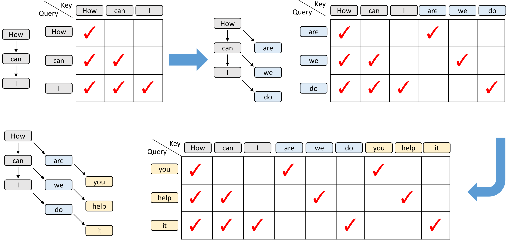
Figure 6: Diagram of the attention causal masks during training-time test. It sequentially shows a native training step (the first step) and two simulated training steps (the second and third steps). The arrows between tokens represent contextual relationships. The gray tokens represent the training data while the blue and yellow tokens represent the first- and second-round predictions by the draft model, respectively.
Click to zoom · Full PDF
Figure 6：训练难点在 attention 的连接关系。 灰色为原始序列，蓝色与黄色为两轮草稿预测。先看第一轮的标准下三角，再看后两轮新增的块：每一个原始位置启动一条自己的递归链，同一训练样本里存在多条并行的模拟分支。
例如原序列位置 的下一轮 query 可以看原始前缀 ，还可以看同一个锚点先前产生的状态。它不应该看到另一个锚点的生成状态，否则会把本不属于该推理路径的信息泄漏进来。对应的生成状态块是对角结构，而不是一个新的完整下三角。
下面可以切换轮次与锚点，观察哪些 key 被开放。亮格表示当前 query 可见；每个 key 标签都写出原始位置或生成轮次。示例仅画 4 个锚点，保留 Figure 6 的连接规则。
AGENT-CREATED / TRAINING MASK EXPLORER
原始前缀可见，生成分支不能串线
灰色 key 未开放；蓝色为教师前缀，金色为当前锚点的生成状态。选择原始轮时没有生成状态；选择后续轮时仅添加同锚点 key。
只展示一个 query 的连接关系；矩阵整体是原始 causal 块与各轮 diagonal 块，不是所有生成 token 混成一条新序列。
训练和推理的差距减少到什么程度？ 这套设计对齐了自生成隐藏状态的暴露。它不自动保证 token 采样、长上下文、所有树拓扑都与真实推理同分布。当前实现仍将教师 token 向左移位作为后续 embedding 输入，不能称为完全自由的 sampled-token rollout。
代价是什么？ 多轮训练增加 drafter forward 和反向计算；冻结目标后可预提取特征，但特征存储和 IO 也有成本。将生成块的稀疏对角关系专门实现，可避免在所有锚点间计算大量最终被 mask 掉的交叉分数。
4. Experiments：把加速、接受长度和框架收益分别核对
实验设置与评测口径
目标包括 Vicuna-13B、LLaMA-Instruct 3.1 8B、LLaMA-Instruct 3.3 70B、DeepSeek-R1-Distill-LLaMA 8B。数据集包括 MT-bench（对话）、HumanEval（代码）、GSM8K（数学）、Alpaca（指令）和 CNN/Daily Mail（摘要）。Temperature=0 与 1 分开展示。
训练使用 ShareGPT 约 68K 条、UltraChat-200K 约 464K 条，回答由 target 重新生成；推理模型额外加入 OpenThoughts-114k-math。约 532K/68K=7.82，可解释图中的 8× 条目规模。AdamW 的 ，梯度裁剪 0.5，学习率 。v3 对训练 token 总量、完整 epoch/算力预算、主表精度、逐项硬件及重复实验方差的交代不足。
Speedup↑ 是相对普通自回归的速度比；↑ 描述每个 draft–verify 周期的平均推进长度。原文有时把它简写为 acceptance length；官方更新逻辑使用 accept_length + 1，包含根/纠正/bonus 所对应的那一格。它不是草稿节点总数，也不是接受百分比。
若任务是判断分类预测，可计算 TP/FP/TN/FN、Precision、Recall、F1；本任务的核心是条件采样与吞吐，没有定义自然的正负标签。强行把 rejected token 当 FP 会掩盖路径依赖。应报告逐位置条件接受率、拒绝位置分布、平均提交长度、wall time、吞吐与 tail latency。
4.1 Effectiveness：完整 Table 1 与最大值的真实范围

Table 1: Speedup ratios and average acceptance lengths \tau of different methods. V represents Vicuna, L31 represents LLaMA-Instruct 3.1, L33 represents LLaMA-Instruct 3.3, and DSL represents DeepSeek-R1-Distill-LLaMA. SpS denotes standard speculative sampling, with its draft model being Vicuna-68M. Methods like Medusa relax acceptance conditions under non-greedy settings, which do not guarantee lossless acceleration. Therefore, we do not compare EAGLE-3 with these methods when temperature=1.
Click to zoom · Full PDF
Table 1 · 完整转录：原始行列、分组与加粗保留；横向滚动查看所有列。
| MT-bench | HumanEval | GSM8K | Alpaca | CNN/DM | Mean | ||||||||
|---|---|---|---|---|---|---|---|---|---|---|---|---|---|
| Model | Method | Speedup | Speedup | Speedup | Speedup | Speedup | Speedup | ||||||
| Temperature=0 | |||||||||||||
| V 13B | SpS | 1.93x | 2.27 | 2.23x | 2.57 | 1.77x | 2.01 | 1.76x | 2.03 | 1.93x | 2.33 | 1.92x | 2.24 |
| PLD | 1.58x | 1.63 | 1.85x | 1.93 | 1.68x | 1.73 | 1.16x | 1.19 | 2.42x | 2.50 | 1.74x | 1.80 | |
| Medusa | 2.07x | 2.59 | 2.50x | 2.78 | 2.23x | 2.64 | 2.08x | 2.45 | 1.71x | 2.09 | 2.12x | 2.51 | |
| Lookahead | 1.65x | 1.69 | 1.71x | 1.75 | 1.81x | 1.90 | 1.46x | 1.51 | 1.46x | 1.50 | 1.62x | 1.67 | |
| Hydra | 2.88x | 3.65 | 3.28x | 3.87 | 2.93x | 3.66 | 2.86x | 3.53 | 2.05x | 2.81 | 2.80x | 3.50 | |
| EAGLE | 3.07x | 3.98 | 3.58x | 4.39 | 3.08x | 3.97 | 3.03x | 3.95 | 2.49x | 3.52 | 3.05x | 3.96 | |
| EAGLE-2 | 4.26x | 4.83 | 4.96x | 5.41 | 4.22x | 4.79 | 4.25x | 4.89 | 3.40x | 4.21 | 4.22x | 4.83 | |
| EAGLE-3 | 5.58x | 6.65 | 6.47x | 7.54 | 5.32x | 6.29 | 5.16x | 6.17 | 5.01x | 6.47 | 5.51x | 6.62 | |
| L31 8B | EAGLE-2 | 3.16x | 4.05 | 3.66x | 4.71 | 3.39x | 4.24 | 3.28x | 4.12 | 2.65x | 3.45 | 3.23x | 4.11 |
| EAGLE-3 | 4.40x | 6.13 | 4.85x | 6.74 | 4.48x | 6.23 | 4.82x | 6.70 | 3.65x | 5.34 | 4.44x | 6.23 | |
| L33 70B | EAGLE-2 | 2.83x | 3.67 | 3.12x | 4.09 | 2.83x | 3.69 | 3.03x | 3.92 | 2.44x | 3.55 | 2.85x | 3.78 |
| EAGLE-3 | 4.11x | 5.63 | 4.79x | 6.52 | 4.34x | 6.15 | 4.30x | 6.09 | 3.27x | 5.02 | 4.12x | 5.88 | |
| DSL 8B | EAGLE-2 | 2.92x | 3.80 | 3.42x | 4.29 | 3.40x | 4.40 | 3.01x | 3.80 | 3.53x | 3.33 | 3.26x | 3.92 |
| EAGLE-3 | 4.05x | 5.58 | 4.59x | 6.38 | 5.01x | 6.93 | 3.65x | 5.37 | 3.52x | 4.92 | 4.16x | 5.84 | |
| Temperature=1 | |||||||||||||
| V 13B | SpS | 1.62x | 1.84 | 1.72x | 1.97 | 1.46x | 1.73 | 1.52x | 1.78 | 1.66x | 1.89 | 1.60x | 1.84 |
| EAGLE | 2.32x | 3.20 | 2.65x | 3.63 | 2.57x | 3.60 | 2.45x | 3.57 | 2.23x | 3.26 | 2.44x | 3.45 | |
| EAGLE-2 | 3.80x | 4.40 | 4.22x | 4.89 | 3.77x | 4.41 | 3.78x | 4.37 | 3.25x | 3.97 | 3.76x | 4.41 | |
| EAGLE-3 | 4.57x | 5.42 | 5.15x | 6.22 | 4.71x | 5.58 | 4.49x | 5.39 | 4.33x | 5.72 | 4.65x | 5.67 | |
| L31 8B | EAGLE-2 | 2.44x | 3.16 | 3.39x | 4.39 | 2.86x | 3.74 | 2.83x | 3.65 | 2.44x | 3.14 | 2.80x | 3.62 |
| EAGLE-3 | 3.07x | 4.24 | 4.13x | 5.82 | 3.32x | 4.59 | 3.90x | 5.56 | 2.99x | 4.39 | 3.45x | 4.92 | |
| L33 70B | EAGLE-2 | 2.73x | 3.51 | 2.89x | 3.81 | 2.52x | 3.36 | 2.77x | 3.73 | 2.32x | 3.27 | 2.65x | 3.54 |
| EAGLE-3 | 3.96x | 5.45 | 4.36x | 6.16 | 4.17x | 5.95 | 4.14x | 5.87 | 3.11x | 4.88 | 3.95x | 5.66 | |
| DSL 8B | EAGLE-2 | 2.69x | 3.41 | 3.01x | 3.82 | 3.16x | 4.05 | 2.64x | 3.29 | 2.35x | 3.13 | 2.77x | 3.54 |
| EAGLE-3 | 3.20x | 4.49 | 3.77x | 5.28 | 4.38x | 6.10 | 3.16x | 4.30 | 3.08x | 4.27 | 3.52x | 4.89 | |
表格导航。 V=Vicuna，L31=LLaMA-Instruct 3.1，L33=LLaMA-Instruct 3.3，DSL=DeepSeek-R1-Distill-LLaMA。每个任务和 Mean 各有 Speedup、 两列。共 24 条模型/方法数据行，其中 T=0 有 14 行，T=1 有 10 行。HTML 的 28 行还包括 2 行表头和 2 行温度分组，不能混作实验条目。
greedy 下主要 Mean 比较：
| Target | EAGLE-2 speed | EAGLE-3 speed | 速度比增加 | 相对 E2 的耗时减少 | ：E2 → E3 |
|---|---|---|---|---|---|
| Vicuna 13B | 4.22× | 5.51× | 30.57% | 23.41% | 4.83 → 6.62 |
| L31 8B | 3.23× | 4.44× | 37.46% | 27.25% | 4.11 → 6.23 |
| L33 70B | 2.85× | 4.12× | 44.56% | 30.83% | 3.78 → 5.88 |
| DSL 8B | 3.26× | 4.16× | 27.61% | 21.63% | 3.92 → 5.84 |
以上是本篇根据表中 rounded Mean 推算；“速度比增加”算 ，耗时减少算 。两者分母不同。不能把 37.46% 的速度比增加写成延迟减少 37.46%。
Temperature=1 的 Mean 分别从 3.76→4.65、2.80→3.45、2.65→3.95、2.77→3.52。L33 70B 的速度比提升约 49.06%，因此正文的“20%–40%”只能作为粗略描述，未覆盖所有主表结果。
最高值。 6.47× 和 同时出现在 Vicuna-13B + HumanEval + T=0。它是相对普通自回归的最大单项值，不是跨任务平均，不是相对 EAGLE-2，更不是任意 serving 框架都达到的收益。
下方选择器使用完整 Table 1 的原始数值，能够比较任一目标、温度和任务的 EAGLE-2 / EAGLE-3，派生百分比不属于新增 benchmark。
ORIGINAL DATA / AGENT-CREATED RESULT SELECTOR
同一条件下，速度与接受长度各变化多少？
仅使用 Table 1 的原始数值；条形按 7× 固定刻度显示，百分比为本篇计算。
baseline 公平性。 Vicuna 上方法更完整，其余模型主要比较 EAGLE-2 / 3。Medusa 等方法在非 greedy 条件下可能放松接受标准，不能保证相同目标分布，所以原文 T=1 不比较这些方法。这个选择合理，但意味着表里缺行不能解读成该方法无法运行。
实验支持多模型、多任务的总体收益；主表仍缺测量方差、长上下文 sweep、输出长度分布与 per-op 时间。EAGLE-3 的训练数据更大，树深度也从 6 改为 8；同节点预算并不等于相同 drafter 串行成本。数据、训练策略和推理配置的贡献没有被完全隔离。
Figure 7：条件接受率不等于整条链存活率

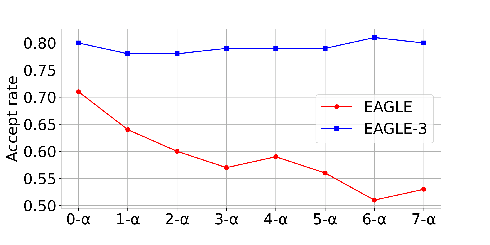
Figure 7: Acceptance rate of EAGLE and EAGLE-3 on MT-bench, with the target model being LLaMA-Instruct 3.1 8B. Hereby, n - \alpha refers to the acceptance rate when the input contains n estimated features, under the condition that the previous estimated tokens are all accepted by the target model.
Click to zoom · Full PDF
横轴为估计特征递归步数，纵轴为对应步的接受率。图注的 明确以“前面的估计 token 都已被接受”为条件。EAGLE 的条件接受率随连续估计步数下降；EAGLE-3 更平稳，说明它更能利用自己的状态。
若第 步条件接受率为 ，整条前 步均存活的概率是 ，仍会随着深度下降。以固定 0.8 为例，单步条件接受率始终 80%，第 6 步链存活率只有 26.21%。因此 Figure 7 的“曲线更平”不是“无限走深还都能接受”。
Copy LaTeX
\mathbb E[K]=\sum_{i=1}^{d}\prod_{j=1}^{i}\alpha_j,\qquad \tau_{\mathrm{chain}}=1+\mathbb E[K]这是单链解析重构： 为被连续接受的草稿 token 数， 为草稿深度，额外 1 表示目标根/纠正/bonus 的推进；EOS、最大长度等截断会改变计数。对 EAGLE 的动态树，不能直接把该式当成论文 的精确拟合。
4.2 Ablation Study：两项改变都有效，但尚未完全分离

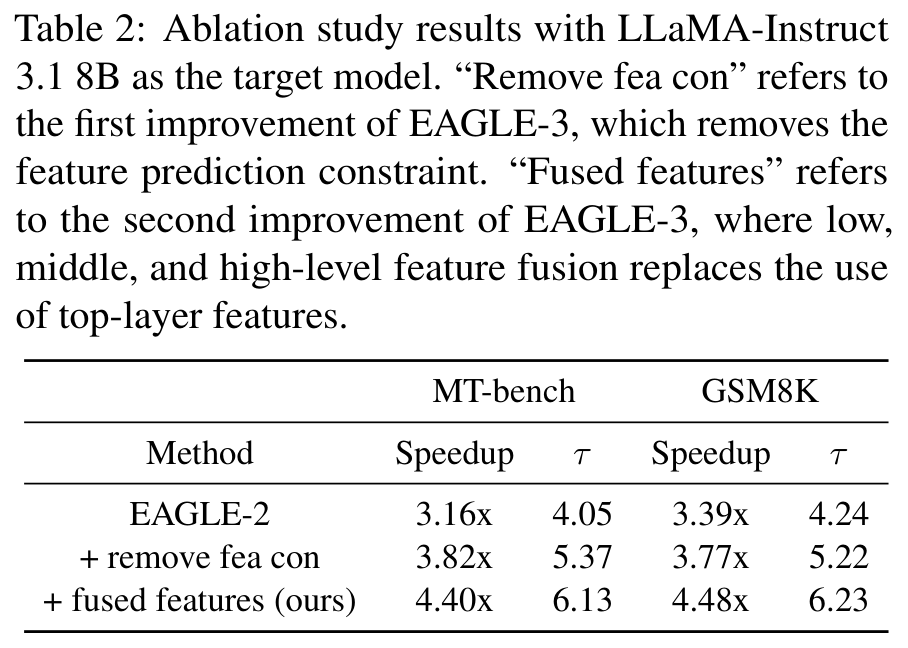
Table 2: Ablation study results with LLaMA-Instruct 3.1 8B as the target model. “Remove fea con” refers to the first improvement of EAGLE-3, which removes the feature prediction constraint. “Fused features” refers to the second improvement of EAGLE-3, where low, middle, and high-level feature fusion replaces the use of top-layer features.
Click to zoom · Full PDF
Table 2 · 完整转录：原始行列、分组与加粗保留；横向滚动查看所有列。
| MT-bench | GSM8K | |||
|---|---|---|---|---|
| Method | Speedup | Speedup | ||
| EAGLE-2 | 3.16x | 4.05 | 3.39x | 4.24 |
| + remove fea con | 3.82x | 5.37 | 3.77x | 5.22 |
| + fused features (ours) | 4.40x | 6.13 | 4.48x | 6.23 |
目标是 L31 8B，表分 MT-bench 与 GSM8K。EAGLE-2 的 speedup 为 3.16 / 3.39；去掉特征约束后为 3.82 / 3.77；再融合多层后为 4.40 / 4.48。接受长度同步从 4.05 / 4.24，增至 5.37 / 5.22，再到 6.13 / 6.23。
第一阶段的速度比增益约 20.89% / 11.21%，第二阶段相对上一阶段约 15.18% / 18.83%。所以多层融合不是只有视觉上的复杂度，它对应明确的增量收益。
不过这是顺序消融，不是全因子实验。Remove fea con 同时涉及去回归与适配递归训练，不能把整段增益全部归于“删除一个 loss”。表中没有“旧约束 + 融合”的组合，也没有单独控制 rollout 轮数、取层位置或等计算预算。最稳妥的结论是这组组合设计有效，而不是每项独立贡献已被唯一确定。
4.3 SGLang：相对强 serving baseline 的收益更小，也更有工程意义

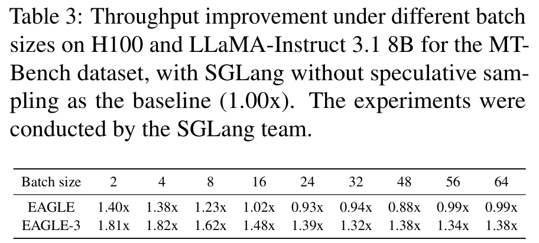
Table 3: Throughput improvement under different batch sizes on H100 and LLaMA-Instruct 3.1 8B for the MT-Bench dataset, with SGLang without speculative sampling as the baseline (1.00x). The experiments were conducted by the SGLang team.
Click to zoom · Full PDF
Table 3 · 完整转录：原始行列、分组与加粗保留；横向滚动查看所有列。
| Batch size | 2 | 4 | 8 | 16 | 24 | 32 | 48 | 56 | 64 |
|---|---|---|---|---|---|---|---|---|---|
| EAGLE | 1.40x | 1.38x | 1.23x | 1.02x | 0.93x | 0.94x | 0.88x | 0.99x | 0.99x |
| EAGLE-3 | 1.81x | 1.82x | 1.62x | 1.48x | 1.39x | 1.32x | 1.38x | 1.34x | 1.38x |
H100 单 GPU、SGLang 0.4.4、L31 8B、MT-bench，chain length=3，baseline 为不做 speculative decoding 的同框架（1.00×）。比较对象是 EAGLE 第一代与 EAGLE-3，不是 EAGLE-2。
batch=2 / 4 时 EAGLE-3 为 1.81 / 1.82×；batch=64 仍为 1.38×。EAGLE 第一代在 batch≥24 多数点低于 1×。高 batch 让 target 本身更接近算力瓶颈，额外 draft 与 verify 工作更难被权重搬运收益抵消；本文结果说明 EAGLE-3 扩大了仍有净收益的区间，但没有证明所有高并发工作负载都保持这一范围。

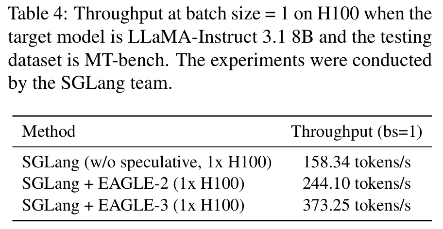
Table 4: Throughput at batch size = 1 on H100 when the target model is LLaMA-Instruct 3.1 8B and the testing dataset is MT-bench. The experiments were conducted by the SGLang team.
Click to zoom · Full PDF
Table 4 · 完整转录：原始行列、分组与加粗保留；横向滚动查看所有列。
| Method | Throughput (bs=1) |
|---|---|
| SGLang (w/o speculative, 1x H100) | 158.34 tokens/s |
| SGLang + EAGLE-2 (1x H100) | 244.10 tokens/s |
| SGLang + EAGLE-3 (1x H100) | 373.25 tokens/s |
batch=1 的实测吞吐分别为 vanilla 158.34、EAGLE-2 244.10、EAGLE-3 373.25 tokens/s。EAGLE-3 相对 vanilla 为约 2.3573×，相对 EAGLE-2 为约 1.5291×，绝对增加 129.15 tokens/s。
将吞吐取倒数得到约 6.3168、4.097、2.6792 ms/token，只是聚合平均的换算。它不能替代 TTFT、逐 token TPOT 分布、P95 延迟，也不能展示一轮验证后多个 token 集中输出的节奏。原表由 SGLang 团队测量，后续官方文档复述同一组数字，不算独立复现实验。
4.4 vLLM：原文的硬件与“最大吞吐”措辞都要保留边界

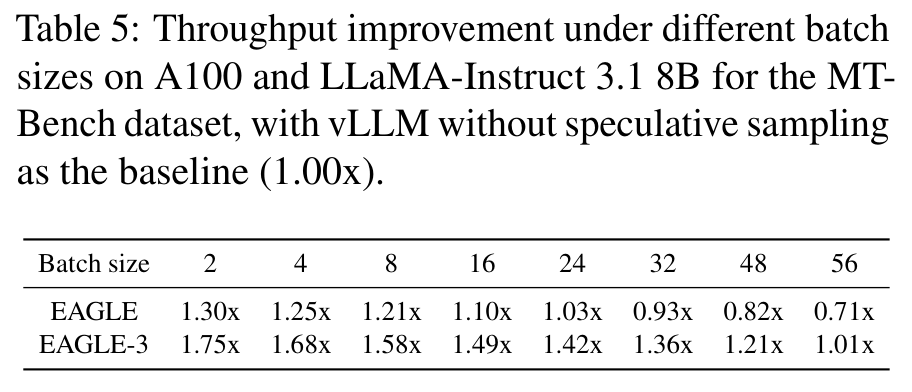
Table 5: Throughput improvement under different batch sizes on A100 and LLaMA-Instruct 3.1 8B for the MT-Bench dataset, with vLLM without speculative sampling as the baseline (1.00x).
Click to zoom · Full PDF
Table 5 · 完整转录：原始行列、分组与加粗保留；横向滚动查看所有列。
| Batch size | 2 | 4 | 8 | 16 | 24 | 32 | 48 | 56 |
|---|---|---|---|---|---|---|---|---|
| EAGLE | 1.30x | 1.25x | 1.21x | 1.10x | 1.03x | 0.93x | 0.82x | 0.71x |
| EAGLE-3 | 1.75x | 1.68x | 1.58x | 1.49x | 1.42x | 1.36x | 1.21x | 1.01x |
baseline 为 vLLM 普通解码，L31 8B、MT-bench、chain length=2。EAGLE-3 从 batch=2 的 1.75× 逐渐到 batch=56 的 1.01×；第一代从 1.30× 到 0.71×。这是另一个强框架下的净收益证据。
正文说 EAGLE / EAGLE-3 分别在 batch 24 / 56 达到 maximum throughput improvement，但表中速度比最大值都在 batch=2。24 / 56 更像“已测试点里最后仍超过 1× 的 batch”。表给的是比值而非绝对 tokens/s，因此既不能将 24 / 56 当成比值最优点，也不能反推出总吞吐的最优 batch。
接受长度如何变成实际速度？
Copy LaTeX
S\approx\frac{\tau\,t_{\mathrm{AR}}}{T_{\mathrm{draft}}+T_{\mathrm{verify}}+T_{\mathrm{misc}}}解析成本模型，非论文实测公式。 为普通自回归推进一 token 的时间，分母是一轮 draft、target verify 和采样/索引/KV 整理的总时间。单位都必须统一为 ms。即使 增长，只要串行 draft、更大验证树或数据搬运增长更多，速度也可能下降。
下面把条件接受率曲线、串行草稿深度和成本拆开调整。选择“衰减”时，第 步按 计算。模型仅解释单链机制，没有拟合本文任何 GPU 数据。
AGENT-CREATED / ANALYTICAL CHAIN MODEL · NOT A BENCHMARK
条件接受率平稳，链存活率仍会下降
| Draft step | Conditional acceptance | Chain survival |
|---|
单链模型；不含 EOS 截断、树分支、动态 batch 或 cache hit。输入的时间是假设值，不能解释为 GPU/NPU 测量。
默认 时，期望接受约 2.9514 个草稿，推进约 3.9514 个 token；若普通一步 10ms，draft 每步 0.5ms，verify 12ms、misc 1ms，则一轮 16ms，解析速度约 2.4696×。这展示的是分子和分母如何同时变化。
5. Related Work：把 EAGLE-3 放回论文发表时的技术分工
原文相关工作大致分三组：提供候选的机制、提高候选准确性的训练、把候选变成更有效验证批次的调度。
标准 speculative sampling 用独立小语言模型，token 分布清楚，但额外模型的全部层都有成本。PLD 从已有文本寻找可复用片段，代码或摘要中的重复特别有利；Lookahead 用并行候选减少串行等待。Medusa 在目标隐藏状态上接多个未来 token 头，Hydra 引入头之间的序列依赖；它们把“同时预测多步”做得便宜，但训练与随机验证的语义需要逐项比较。
EAGLE 的特征路线缩短 drafter，EAGLE-2 的树路线分配验证预算。HASS 通过训练上下文对齐提高多步稳定性，但仍保留特征预测约束。EAGLE-3 进一步让状态摆脱教师表示回归，同时在训练中承担后续反馈。FRSpec 则关注大词表 head 的开销：提高接受率之外，削减每一步候选打分成本也是另一条有效轴线。
原文还把量化、蒸馏与验证式加速区分：前两者可能改变模型精度，推测采样保留 target 验证。GLIDE / CAPE 复用 target KV；Draft & Verify、LayerSkip 等路线借助早退、跳层或部分目标权重降低草稿成本。它们优化的是“候选怎样得到”，与 EAGLE-3 的多步状态训练可以互相参照，但是否组合有效仍需专门实验。
| Work / date | 核心设计 | 优势 | 局限与 EAGLE-3 的关系 |
|---|---|---|---|
| Speculative Sampling · 2022–2023 | 草稿采样 + 接受/残差纠正 | 精确目标分布的基础 | 独立 drafter 可能昂贵；EAGLE 仍依赖验证原理 |
| Medusa · 2024 | 多头提出未来 token | 并行、接入直接 | 多步依赖与随机接受条件要区别；主表 T=1 排除放宽规则的方法 |
| EAGLE · 2024-01 | 特征预测 + 向前移位 token | 轻量 decoder、利用 target 信息 | 特征回归形成约束 |
| EAGLE-2 · 2024-06 | 置信度驱动动态树 | 有限节点下提升候选覆盖 | 不独自解决递归状态漂移 |
| HASS · 2024-08 | 训练上下文对齐 | 减少多步输入偏差 | 仍保留 feature constraint |
| FRSpec · 2025-02 | 频率感知词表约简 | 减少 LM head 成本 | 优化成本轴，不等价于 training-time test |
| EAGLE-3 · 2025-03 | 自由状态 + rollout + 多层融合 | 多步接受更稳、可用更多数据 | 训练/特征接入/树执行更复杂 |
表是本篇总结，前六行是原文上下文和已核验先行工作。后续 DFlash 与 EAGLE-4 放在下面的日期化扩展部分，避免让读者误以为 2025 v3 已比较了 2026 方法。
6. Conclusion：论文真正证明了什么？
EAGLE-3 的主要贡献是更适合递归使用的 drafter 训练方式。特征回归不再是唯一的状态稳定手段：将自由状态暴露给后续训练，再从目标多层特征起步，可以提高多步可接受性。在本文覆盖的模型和任务中，整体速度与推进长度都有明显提升；服务框架实验说明收益能进入真实软件栈。
这不是关于目标模型质量提升的论文，也未给出 TTFT、能耗、端侧 NPU 或长期并发 tail latency 的结论。目标分布等价来自正确验证算法，drafter 的好坏决定节省多少工作，而不是放弃验证后的最终质量。
原文致谢与参考文献可在完整 PDF 和 TeX 中核对，致谢并不构成独立复现证据；本文不把参考列表本身当成逐篇精读结论。
Appendix A. Implementation Details：复现实验需要哪些具体配置？
原文基准实现。 基于 Hugging Face Transformers + PyTorch，预分配 KV cache；PLD、Lookahead、Medusa、Hydra 用默认权重和设置。针对 LLaMA 3 的第一代 EAGLE 用 ShareGPT 训练。EAGLE-2 的候选节点预算为 8B→60、13B→50、70B→48，树深 6，每轮 top-10 扩展；EAGLE-3 保留对应总节点数，树深增至 8。
节点预算相同能限制 target 候选数，却没有固定 drafter 的串行轮数。加大数据与加深树也同时发生，所以主表是最终系统的性能对比，不是严格隔离单个 loss 改动的成本控制实验。
未覆盖项。 405B、671B 级目标模型因 GPU 资源限制未测试。没有完整长上下文曲线、不同 dtype/量化校准、训练预算匹配、不同 target 家族 feature hook 的泛化、持续并发请求分布与能耗统计。复制一个训练 config 的 FP16 字段，不足以证明每项原论文测量都使用该精度。
复现的最小记录。 固定 target 与 drafter checkpoint、仓库 commit、框架/内核版本；固定 dataset prompt 与 output cap、temperature/top-p、batch 或并发模型；区分冷启动、prefill、decode；同时记录 draft/verify/misc 时间与接受长度。随机采样需验证分布正确，greedy 需验证目标 token 一致。论文未提供的测量项，应补测并注明来源。
扩展调研：从 2025 的多步状态，走到 2026 的硬件适配
External Sources · 检索截止 2026-10-27 · 以下内容不属于原论文 v3

工程采用：SGLang、SpecForge 与 vLLM 生态
SGLang 当前文档已经覆盖 EAGLE-2/3、MTP、DFlash 和相关调度选项；它证明机制进入成熟服务栈，但不是一个涵盖所有硬件与 workload 的“最佳方法”排行榜。原表的 H100 数字被文档引用，不能重复计为第二次独立验证。
EAGLE 官方仓库自 2025-07-23 推荐 SpecForge 训练工具。它改善在线/离线特征获取与 drafter 训练工程，减少接入成本。本篇核对的是代码路径，没有在 GPU 上重训，也没有生成新的实测加速数字。
2026-05-28 的 Speculators v0.5.0 官方生态文章介绍 vLLM 原生隐藏状态提取和 DFlash 等训练路线，文中对应 vLLM≥0.20。vLLM 支持一类接口，不代表任意 checkpoint 和任意版本自动兼容。 需要核对 vocab map、feature layers、position、验证实现与模型头部结构。
DFlash：减少草稿路径的串行深度
DFlash v2（2026-05-28） 走 block diffusion 路线：典型配置用多层 drafter 在一次前向内产生一个 token block，并注入目标上下文 KV。EAGLE-3 的轻量单层模型通常串行走多步，DFlash 则把更大 drafter 的并行能力换取更少轮次。两者都利用目标中间信息，但状态演进与候选生成方式不同。
作者报告相对 EAGLE-3 可达约 2.5× 的设置内优势，必须连同条件阅读：SGLang 实验是单 B200、FA4 等优化；Transformers 路径用 H200。EAGLE-3 baseline 的 checkpoint 来源也不同，Llama 采用官方权重，Qwen 比较使用 AngelSlim 提供的版本。不能把 2.5× 再乘原论文 6.47×，拼出一个从未实测的结果。
判断并行 block 是否值得，要比较 block drafter cost + target verify cost，并看该 block 最终提交多少 token。层数变多增加参数和计算，减少串行 round 却可能更适合 GPU。对于 NPU，单次较大的静态块与许多小调用的差别也可能很大，必须实测。
EAGLE-4：刚发布的新结果应以可比设置呈现
2026-10-20 的官方发布及源代码论文提出 One Flexible Drafter for All Batch Sizes and Hardware。其关注点转向候选 head 与调度：低秩候选检索后做精确候选打分，运行时按硬件/batch 成本 profile，动态组织候选树（EAGLEHarness）。这是 2026 的新作者结果，本篇未确认独立同行复现，也不预设许可证是 Apache。
其 Qwen3.8-27B、4×B300、TP=4、T=0、SPEED-Bench 且 MegaKernel 关闭的同表比较：
| Concurrency | Vanilla | DSpark | DFlash2 | EAGLE-4 | E4 / DFlash2 |
|---|---|---|---|---|---|
| 1 · tokens/s | 240.5 | 618.6 | 672.6 | 863.8 | 1.2843× |
| 512 · aggregate tokens/s | 21203 | 14229 | 16641 | 28340 | 1.7030× |
数字来自 EAGLE-4 作者报告；DFlash2 的版本与引擎条件不同于 ICML DFlash 原表。batch/concurrency=512 时 drafter 的额外工作可使部分方法比 vanilla 更慢，这与 EAGLE-3 本文高 batch 的成本逻辑一致。表支持该系统设置中的领先，不支持跨硬件通用 SOTA 宣称。
端侧资料的边界。 同一作者材料报告，4-bit Gemma4 E2B 在 AWS c5.xlarge（4 vCPU / 8GB）上平均约 2.71×；Snapdragon 8 Elite 的 Razr 70 Ultra、6 线程、HumanEval，从 22.8 增到 82.6 tokens/s，长文本 USB 能耗从 356 到 166 mJ/token。它们是后续论文的 llama.cpp CPU 路径与作者测量，不是 EAGLE-3 在 QNN/HTP 上的证据。温度、线程、模型权重与测能边界必须连同结果保存。
当前应怎样选择路线？
| 场景 / 轴线 | 优先比较什么 | 不足以决定的单个数字 |
|---|---|---|
| 低 batch、目标权重搬运重 | EAGLE-3 的接受长度 / 轻 drafter 成本 | 最高 6.47× |
| GPU 串行 draft 成为瓶颈 | DFlash block 一次前向的成本与提交率 | 单步接受率 |
| 高并发、验证计算已饱和 | 调度、candidate head、硬件 profile，含 E4 | batch=1 tokens/s |
| 大词表 | FRSpec / draft vocab / head 代价 | decoder 层数 |
| CPU / NPU / 混合设备 | 接口调用、数据驻留、静态形状、回滚成本 | GPU speedup |
截至检索日，EAGLE-3 是成熟且广泛集成的路线之一；后续并行草稿和自适应调度在指定设置中有更强结果。当前 SOTA 必须绑定模型、数据集、硬件、并发、框架、验证语义和度量，不能仅按发表日期排名。
官方代码审计：论文示意图与当前实现分别是什么？
External Source · SafeAILab/EAGLE commit cb7e0841fe0c206c6ed74a197ad5e2a1f13f5a2b · 检查日 2026-10-27。此 commit 并非已证实的原论文 benchmark commit。
从 target feature 到最终提交的调用链
ea_model.py 驱动 target forward 和草稿树；modeling_llama_kv.py 暴露选定层隐藏状态；cnets.py 执行融合、草稿 decoder、词表投影及候选构造；utils.py 处理树验证后的路径、接受长度和 KV 更新。
对于有 个 decoder block 的 target，hook 在进入零基 block 2、L//2、L-3 之前截取状态。L=32 时就是完成 2、16、29 个 block 后的隐藏状态。把它写成“第 2、16、29 个 block 的输出”会偏移一层。返回 tuple 中可能还有最终状态，融合使用前三个选定状态。
# Reconstruction of inspected code, names simplified
teacher_features = concat(selected_hidden_states[:3], dim=-1) # 3k
state = fusion_fc(teacher_features) # k
token_embed = frozen_target_embedding(next_input_token) # k
joined = concat(norm(token_embed), norm(state), dim=-1) # 2k
q = q_proj(joined) # 2k -> k
k_cache = k_proj(joined) # 2k -> h_kv * d_h
v_cache = v_proj(joined)
raw_state = one_decoder_layer(q, k_cache, v_cache, residual=state)
draft_logits = draft_head(final_norm(raw_state)) # k -> V_d
# recurrence uses raw_state; final_norm is for the output head
与论文图的差别。 论文描述拼接后还有 2k→k FC；当前 cnets.py 对应 FC 被注释，Q/K/V 直接接受 2k。3k→k 融合 FC 仍在。不能按论文图推断每个实际 Linear 的输入宽度，也不能拿图中的轻量结构估算当前代码的精确参数。
当前草稿使用独立可训练 lm_head，Llama 配置的 draft vocab=32000，而 target vocab=128256。embedding 从 target 复制并冻结；有 d2t / t2d 词表映射。它不是简单共享一个冻结 target LM head。 出词表覆盖之外的训练位置如何 mask、映射是否一致，都能直接影响接受率。
训练代码：反馈的是 raw state，token 仍沿教师序列移位
eagle/traineagle3/cnets.py 设 self.length=7，main.py 的多轮 CE 用 权重。target / embedding 冻结，教师 logits 转成限制在 draft vocab 的 soft target；教师 argmax 不在该子集的部分位置会被训练 mask 排除。代码没有 feature regression loss。
raw hidden_states_out 赋给下一轮 hidden_states，没有 detach；后轮损失可沿状态递归回传。最终 Norm 后的向量用于 LM head，递归反馈仍是 Norm 之前的状态。冻结教师特征在 no_grad 下提取，这与切断 drafter 自反馈梯度不是一回事。
每轮将 input_ids、目标 logits 和 mask 向左移动，下一轮 embedding 来自移位教师数据，不是采样出的 draft token。它是隐藏状态上的 rollout 暴露 + 教师 token 路径。这个区分有助于评估残余 exposure bias，也说明训练 Figure 6 的“预测 token”画法不能被逐字等同为完全自由采样实现。
attention 实现对原始 key 计算 dense causal score，对先前模拟轮次的同锚点 key 计算对角 score，再进行同一个联合 softmax。如果先各自 softmax 后相加，相当于给不同块任意分配概率质量，已不是原 attention 语义。
参数量：一层不等于只有一个很小的矩阵
以下是上述 config 与代码结构的解析计数，不是原论文测量。取 ，忽略非参数的映射 buffer：
| Module | 参数表达式 | 参数个数 |
|---|---|---|
| Feature fusion | 50,331,648 | |
| Q projection | 33,554,432 | |
| K projection | 8,388,608 | |
| V projection | 同上 | 8,388,608 |
| O projection | 16,777,216 | |
| SwiGLU gate / up / down | 176,160,768 | |
| Draft LM head | 131,072,000 | |
| Four RMSNorm weights | 16,384 | |
| Trainable subtotal | 上述之和 | 424,689,664 |
| Frozen target embedding copy | 525,336,576 | |
| Unique loaded draft total | 若 embedding 单独驻留 | 950,026,240 |
FP16 / BF16、每参数 2 bytes 时，单独加载约 1.76956 GiB，尚不含 KV、激活、allocator、临时 logits 与 target。共享 embedding 实体会降低额外驻留，但“同源权重”不等于同一 storage；需检查 data pointer 和设备 placement。训练 optimizer 状态另算，冻结 embedding 不需要它自己的梯度与 Adam moment。
KV、特征 buffer 与峰值内存
单层 draft 的 KV 解析量为：
Copy LaTeX
M_{\mathrm{KV,draft}}=2BS\,h_{kv}d_h\,b为每元素 bytes，2 表示 K 和 V；shape 为 。默认 GQA、FP16 时，每个序列位置 4096 bytes。 时约 16 MiB；同结构 32 层 target 对应约 512 MiB。真实 target dtype、布局和 KV 量化要另行核对。
三路原始特征 buffer 为 ，融合状态为 。不用保存所有层；但树验证的新节点 KV、gather/scatter 中间区、候选索引与回滚副本会推高峰值。上述 16 MiB 是线性序列 KV，不能当成包含整棵候选树的运行峰值。
对端侧物理占用，CPU 的 VmHWM 与 HTP 的 ION/dma-buf 应分开统计，并说明是否重复映射。EAGLE-3 原文没有这一数据，本篇也没有在设备上产生测量。参数字节与实际物理峰值不是同一个指标。
Per-op 成本：真正容易漏掉的额外工作
| 路径阶段 | 必要工作 | 可能成为瓶颈的条件 | 应记录的证据 |
|---|---|---|---|
| Target feature extraction | hook、三路状态采集 | device copy、未融合 concat、保留过多激活 | bytes、同步次数、feature extraction 时间 |
| Drafter | Norm、QKV、GQA、SwiGLU | 小 GEMM 低利用率、串行 round 多 | 每轮时间、kernel launch 数 |
| Output head | 投影、top-k、映射 | 大词表、CPU top-k、device roundtrip | head / sampling 时间 |
| Target verification | tree mask、位置、候选 forward | 高 batch、树宽大、内核不支持树形 mask | verify 时间、节点数、KV 读写 |
| Commit / rollback | 接受路径、KV gather、索引更新 | cache compact、异步生命周期、跨设备同步 | misc 时间、内存峰值、P95 |
融合单位置约 50.3M MAC，SwiGLU 权重约 176.2M，draft head 投影约 131.1M MAC/位置；这些数量帮助判断相对成本，但 MAC 不等于 ms。共享/缓存、精度、算子融合和内存层级共同决定实际耗时。
在 QNN/HTP 或 Native C++ Runner 上，接入的首要问题是 target 是否能提供稳定的中间特征接口、任意树 mask 是否落在高效内核、KV 是否能事务式提交/回滚。CPU drafter 与 NPU target 混合执行若每步搬运特征，可能吃掉收益。静态链或 block 可以是工程候选，但应由 profiling 决定。
若量化后接受率变差，先核对特征抽取、归一化、词表映射、导出算子的尺度与 logits 漂移，保持目标验证分布的口径一致。不能未经对照就归因于“草稿太小”。Prefill / decode 两条路径尤其要对齐首 token 的生成与状态更新，避免第一格就出现不同的 logits。
My Interpretation：优势、隐含代价与下一步实验
Novelty 与正确性。 最有价值的创新是自由状态和多轮监督共同改变 drafter 学习对象；多层融合提供更好起点。分布等价依赖原有推测采样原理，不是这篇重新证明了任意快速验证规则都无损。接受率图和消融为设计提供支持，但“顶层只包含 token 信息”的论证应保持经验性。
实验与泛化。 多任务、多目标及两种服务栈是强项；逐行审计揭示总体改善仍包含例外。数据与训练计算、树深度、精度和系统优化未完全控制；没有独立复现或方差信息。跨架构特征层选择、长上下文、低精度和端侧只是开放问题。
工程和资源。 单层 drafter 很适合减少递归成本，但融合矩阵、宽 QKV、SwiGLU、32K head 和 embedding 都有驻留成本。提高接受长度也可能扩大 draft 串行路径。部署要共同衡量接受概率与每轮花费，不能只优化一个离线 loss。
如果我是 reviewer，最想补的五组实验
- 全因子消融。 feature loss、rollout、multi-layer fusion 独立开关，固定训练 token/FLOPs、相同树深度；区分目标变化与额外训练预算。
- 真实 token rollout 对照。 当前教师移位 embedding 与 sampled-token embedding 对比；看逐步条件接受率、拒绝位置及训练稳定性。
- 取层与表示压缩。 固定层组合、可学习加权、低秩融合，报告接受收益与特征 IO，验证中间层信息是否值得额外读取。
- 系统分解。 batch / context / output length sweep，测 TTFT、TPOT P50/P95、draft/head/verify/misc，比较固定链、固定树、动态树与并行 block。
- 量化与跨设备。 保持目标 checkpoint 不变，逐模块量化，测接受率和误差来源；Native C++ 常驻路径测 VmHWM、dma-buf 峰值、温升和每 token 能耗。
两个可继续研究的方向
把训练权重对准“最终能省几毫秒”。 当前按轮衰减的 token loss 不直接知道硬件成本。后轮即使更准，也可能增加很少的链存活概率；可将条件接受收益与 profile 成本结合，学习何时停止或展开。验证规则仍保持精确，变化发生在候选预算分配。
只搬运真正需要的信息。 多层融合有用，不代表三份完整特征每轮都必须跨设备传输。target 端提前融合、按层低秩压缩或保留共享驻留区，可能降低数据搬运。但需要分别验证压缩后的接受率与同步成本，不能从参数少直接推断速度快。
我的最终判断是：EAGLE-3 给出了一个可迁移的训练原则——状态的好坏应由它是否支持未来决策来衡量，而非是否复原教师内部坐标。让它进入实际业务，还必须把这种学习收益落实为更少 target 循环和足够低的额外执行成本。
References、来源与下载
正文原文引文统一指向 EAGLE-3 v3 PDF 与 TeX，外部结果另标检索日期。以下给出可点击链接及完整 URL，方便在其他阅读器中访问。
- EAGLE-3 · arXiv 2503.01840v3 · https://arxiv.org/abs/2503.01840v3
- Fast Inference from Transformers via Speculative Decoding · Leviathan et al. · ICML 2023 · https://arxiv.org/abs/2211.17192
- Accelerating Large Language Model Decoding with Speculative Sampling · Chen et al. · 2023 · https://arxiv.org/abs/2302.01318
- EAGLE: Speculative Sampling Requires Rethinking Feature Uncertainty · Li et al. · ICML 2024 · https://arxiv.org/abs/2401.15077
- EAGLE-2: Faster Inference of Language Models with Dynamic Draft Trees · Li et al. · EMNLP 2024 · https://arxiv.org/abs/2406.16858
- Learning Harmonized Representations for Speculative Sampling（HASS） · ICLR 2025 · https://arxiv.org/abs/2408.15766
- FRSpec: Accelerating Large-Vocabulary Language Models with Frequency-Ranked Speculative Sampling · 2025 · https://arxiv.org/abs/2502.14856
- DFlash: Block Diffusion for Flash Speculative Decoding · ICML 2026 · https://arxiv.org/abs/2602.06036v2 · https://dflash.z-lab.ai/ · https://github.com/z-lab/dflash
- EAGLE-4: One Flexible Drafter for All Batch Sizes and Hardware · 2026-10-20 author release · https://blog.eagle.ai/blog/introducing-eagle-4 · https://github.com/eagle-hq/EAGLE-4
- Official EAGLE code · https://github.com/SafeAILab/EAGLE/tree/cb7e0841fe0c206c6ed74a197ad5e2a1f13f5a2b
- SpecForge · https://github.com/sgl-project/SpecForge
- SGLang speculative decoding · https://docs.sglang.ai/advanced_features/speculative_decoding.html
- Speculators v0.5.0 · 2026-05-28 · https://vllm-project.github.io/2026/05/28/speculators-v050.html
- NeurIPS 2025 record · https://openreview.net/forum?id=4exx1hUffq
Evidence downloads · Asset inventory · Source provenance · Original captions · Original bibliography · Research dossier · Review & QA · Reading Markdown
Changelog · 2026-10-27。 指定 v3 全文与附录精读；7 张原图、5 个完整原表；多轮 mask、结果选择器与解析成本交互；官方代码审计及截至当日的后续研究。更新后续进展时保持原论文历史结果与新来源分开。